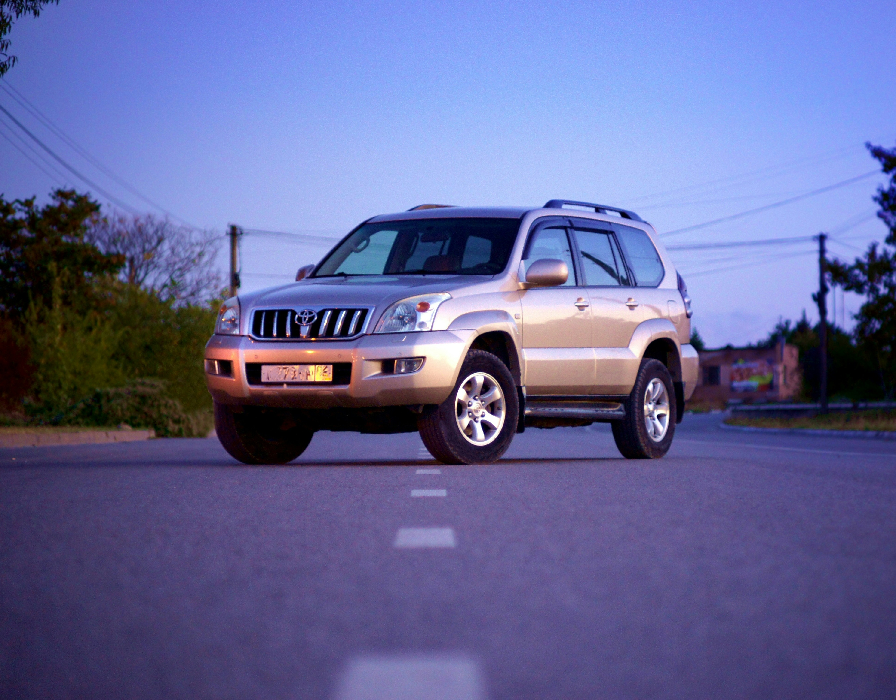
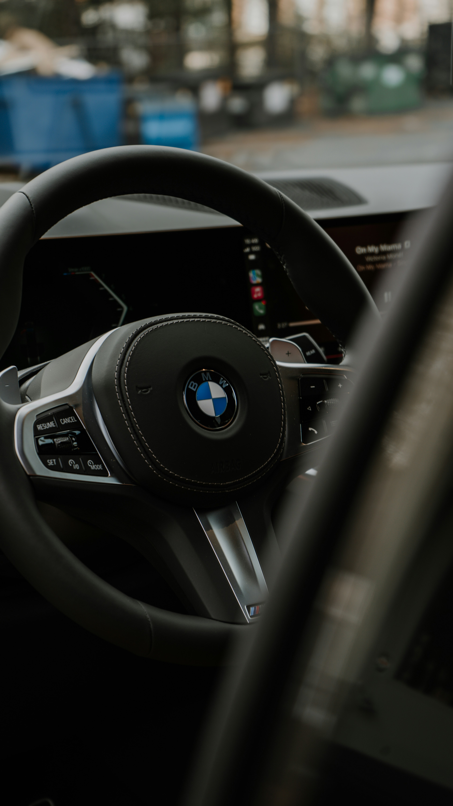

Request
Send your pickup, destination, date, time, passenger count and any important trip details.

Private, pre-arranged transportation for airport transfers, hotel guests, business travel, events and interstate journeys. From Abuja to where you need to be.
AAZ Global Logistics & Autos is built around what happens before the vehicle moves: a clear pickup, the right vehicle for the trip, a chauffeur who knows the schedule and a journey that feels considered rather than improvised.
No complicated booking flow. Share the trip, let AAZ confirm the vehicle and availability, then travel with the arrangement already understood.
Send your pickup, destination, date, time, passenger count and any important trip details.
AAZ reviews the journey and confirms availability, vehicle arrangement and the next booking details.
Meet your arranged chauffeur and continue with the journey without having to coordinate it from scratch.
Private pickup and drop-off at Nnamdi Azikiwe International Airport (ABV) and other agreed locations.
02Comfortable private transport between hotels, airports, meetings, restaurants, events and other destinations.
03Chauffeur arrangements for executives, meetings, visiting partners, teams and business itineraries.
04Travel from Abuja to Lagos, Kaduna, Kano, Jos and destinations across Nigeria by arrangement.
05Dedicated transport for conferences, private events, guest movements and special occasions.
06Extended road journeys and cross-border requests considered in advance around practical requirements.
Vehicle selection depends on availability, passenger count, luggage, route and the purpose of the trip. AAZ can arrange executive sedans, SUVs, practical vehicles and multi-passenger options.
Additional SUV and multi-passenger arrangements may include Land Cruiser, Sienna or similar vehicles, subject to availability.
See vehicle optionsThe journey can continue well beyond Abuja. Plan interstate travel, long-distance road trips and multi-day arrangements around your actual itinerary.

For longer journeys, the small details matter: luggage room, cabin comfort, a clean vehicle, an understood route and enough attention to your schedule that you can focus on the reason you are travelling.

Send the basics and AAZ can confirm availability, vehicle and the most suitable arrangement for your journey.